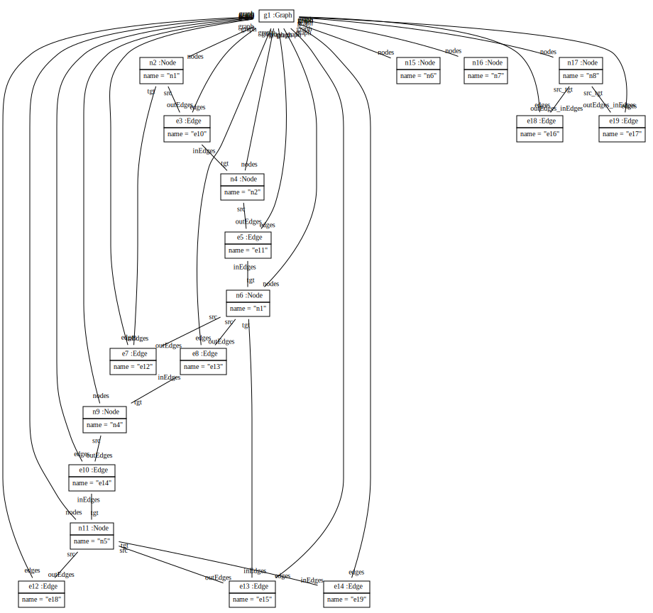
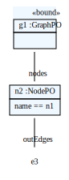
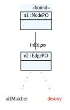
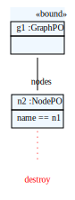

Scenario TTC2011DeleteNodeWithSpecificName
Delete node with name n1 and its incidemnt edges.
Start graph:
Transformation:
private void deleteNodeWithNameN1(Graph graph, Scenario scenario)
{
// find node
NodePO nodeN1PO = new ModelPattern()
.hasElementGraphPO(graph)
.hasNodes()
.hasName("n1");
// destroy all leaving edges
new ModelPattern()
.hasElementNodePO(nodeN1PO.getCurrentMatch())
.hasOutEdges()
.destroy()
.allMatches();
scenario.add(ModelPattern.lastPattern.dumpDiagram("deleteNodeWithNameN1_leavingEdges", false));
// destroy all incoming edges
new ModelPattern()
.hasElementNodePO(nodeN1PO.getCurrentMatch())
.hasInEdges()
.destroy()
.allMatches();
scenario.add(ModelPattern.lastPattern.dumpDiagram("deleteNodeWithNameN1_incommingEdges", false));
// destroy the node
nodeN1PO.destroy();
scenario.add(nodeN1PO.getPattern().dumpDiagram("deleteNodeWithNameN1_nodeN1", false));
}



Result graph: